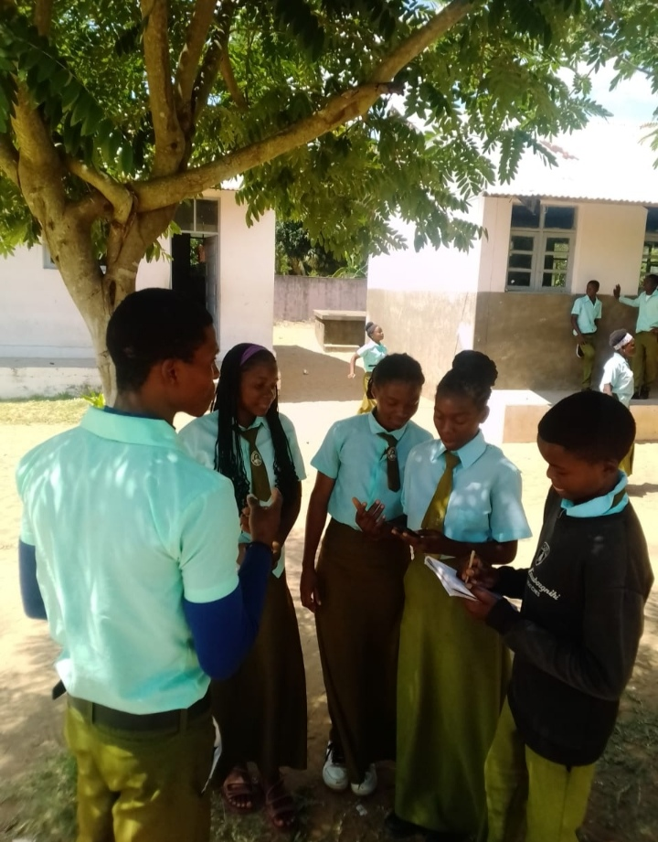

Estudar é o caminho para o futuro. Nenhuma rapariga deve desistir sozinha.

Foto 1 - Ficheiro com o nome: foto1.jpg
O casamento prematuro acontece quando uma rapariga ou rapaz se casa antes dos 18 anos, ainda na idade de estar na escola. Em Moçambique, muitas raparigas deixam de estudar por causa desta prática.
Este tema é importante porque a escola não é só um lugar para aprender matérias. É onde se constrói o futuro, se ganha independência, se protege a saúde e se aprende a fazer escolhas.
Compreender como os casamentos prematuros afectam a continuidade dos estudos e propor soluções para manter as raparigas na escola, na Escola Secundária Marien Ngouabi Xai-Xai.